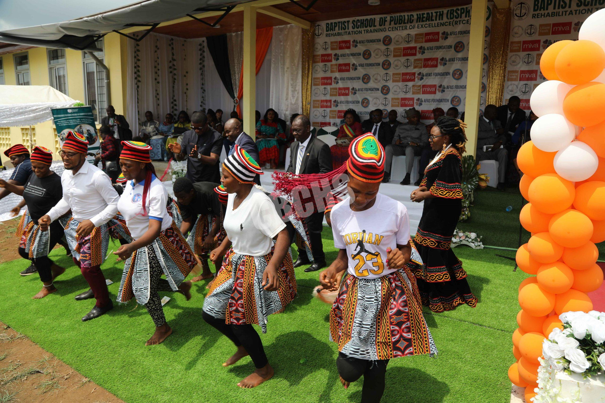

Visit Bamenda City
Enjoy Culture and sports in this vibrant city of Cameroon. The heart of Culture in the nation
Top three activities to do while in Bamenda

Achu is a traditional and culturally significant dish originating from the Northwest and West regions of Cameroon, particularly among the Ngemba and Bamileke people. Often called "Food for Kings" or "One Finger," it consists of pounded cocoyams (taro) served with a vibrant, flavorful yellow soup.
The Njang dance is a vibrant, rhythmic traditional dance originating from the Grassfields region of Cameroon (specifically the Northwest and Southwest Regions). It is celebrated for its fast-paced, synchronized footwork, energetic shoulder movements, and the use of traditional instruments like the ndjang (xylophone), drums, and bells
Discover the barefoot football which originated in Bamenda. With balls made from old rags and leaves of treesHistorically, barefoot football was widely practiced and even seen at the international level. Today, the sport is strictly governed by rules requiring footwear in professional leagues, though barefoot training remains highly popular for developing foot sensitivity and ball control.